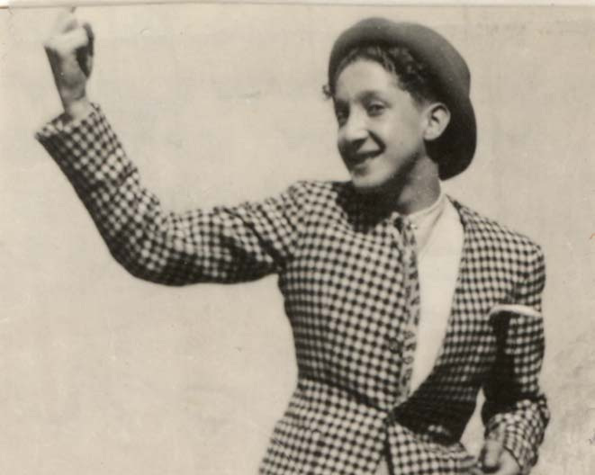

Portrait d’archive
Joseph Emir (F)
Joseph EMIR
Nom : EMIR
Prénom(s) : Joseph
Date naissance : 29/06/1927
Âge (ans) : 17
Lieu naissance : Lyon
Pays ou département : Rhône
Lieu rassemblement : Chatillon d'Azergue
Dernière adresse : 5 quai Général Sarrail
Ville : Lyon
Code postal : 69006
Date d’exécution : 19/07/1944
Informations diverses : Joseph Emir était le fils de Joseph Emir et de Clara Fernandez. Il était juif d’origine iranienne. Il était célibataire et demeurait avec sa mère à Lyon (Rhône), 5 quai Général Sarrail (VIe arr.). Joseph Emir était élève au lycée Ampère (Lyon, IIe arr.) en 7ème 2 (1938-39). Il était également vendeur dans le magasin de tapis d’Orient de Barouh Emir, 7 rue de la République (Lyon, Ier arr.). Suite à une dénonciation, le 12 ou le 13 juillet 1944, Joseph Emir et ses deux frères, Barouh Emir (janvier 1908, Téhéran, Iran) et Marco Emir (04/03/1914 à Constantinople, Empire ottoman), furent arrêtés par les Allemands parce qu’ils étaient juifs. Ils furent incarcérés à la prison de Montluc (Lyon), dans la « Baraque aux Juifs ». Le 19 juillet 1944, Joseph, Barouh et Marco Emir et quarante-neuf autres détenus furent extraits de Montluc et exécutés sommairement par les Allemands à Châtillon-d’Azergues (Rhône). Le corps de Joseph Emir fut décrit comme suit : 1m70, yeux bleus, cheveux frisés de couleur châtain moyen. Le 21 septembre 1944, il fut identifié par sa mère sous le numéro 42. Il fut inhumé au cimetière d’Amancey (Châtillon-d’Azergues). Exhumé le 8 octobre 1944, son corps fut enterré au cimetière juif de Lyon - La Mouche (VIIe arr.). Son nom apparaît sur le monument rendant hommage aux cinquante-deux victimes du 19 juillet 1944 à Châtillon-d’Azergues et sur la stèle commémorative 1939-1945 de Dardilly (Rhône). Il est également gravé sur une plaque commémorative située dans le lycée Ampère (Lyon). (Source: Maitron)
Fusillé